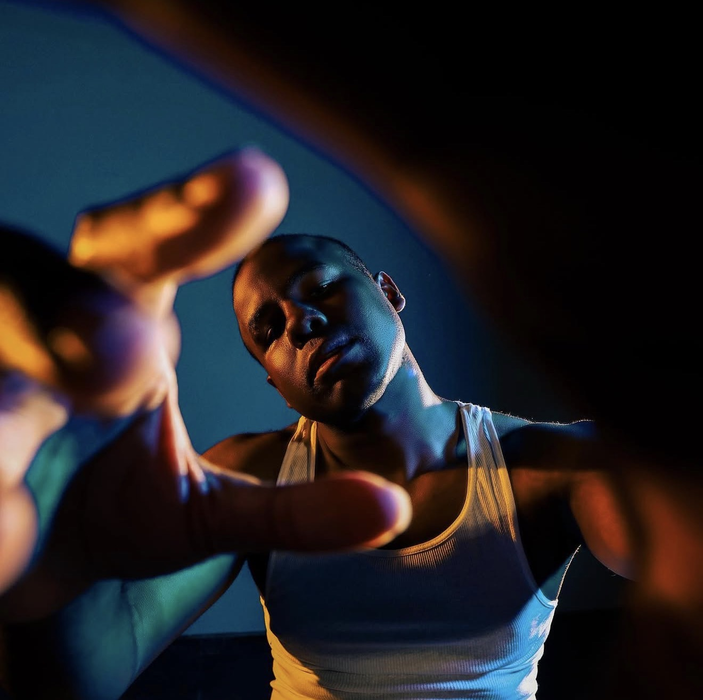
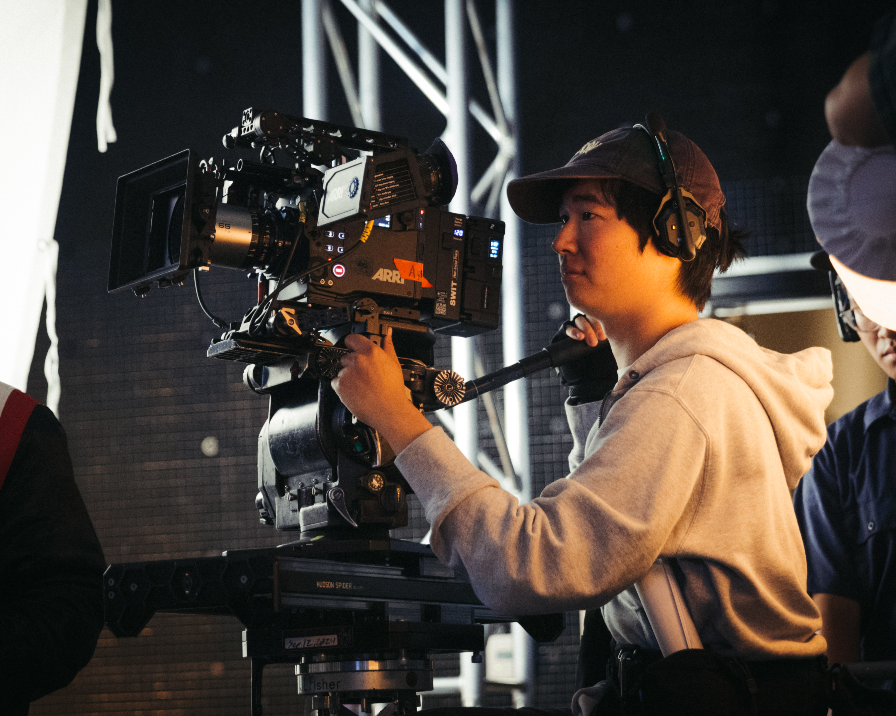

Logline
A young boy uses a space-themed world to survive life on Earth, where danger lives at home and hope sounds like an AI companion in his helmet.
A short film experience
The Girl Trapped on Mars blends grounded emotion with a futuristic visual language, inviting audiences into a world where escape is built from cardboard, starlight, and will.
INCOMING:
“Some Worlds are Built…
to Survive Others.”
A young boy uses a space-themed world to survive life on Earth, where danger lives at home and hope sounds like an AI companion in his helmet.
This film explores how imagination becomes a life raft for children without turning trauma into spectacle.
Minimal sets, bold light, and a cinematic contrast between domestic realism and imagined outer space.
Explore the world, tone, characters, visual language, and creative intentions behind The Girl Trapped on Mars through the full deck presentation.

Aaron "AJ" Thames

Cameron Dirton

Haocheng Zhang
Camilla Rogers
Jason Styles

Scott Liu

Barbara Stanz
Rudy Gilbert
Goal: $35,000
The Girl Trapped on Mars is a fantasy sci-fi short film that requires a much larger visual and production scope than a typical contained short. We are raising funds to help bring that world to life with the care, detail, and cinematic quality the story deserves.
A major part of our budget will go toward location and travel expenses. We plan to shoot on location in Utah, which means transporting cast, equipment, wardrobe, props, and essential production materials out of state. Travel, lodging, meals, and the overall logistics of moving a production to a remote location add significantly to the cost, but they are necessary to achieve the scale and landscape this story needs.
We are also raising funds to support cast compensation, rental equipment, production design, and costumes. Because this is a fantasy sci-fi short film, the visual details matter deeply. The world of the film has to feel imaginative, emotionally grounded, and fully realized. That means investing in strong design elements, wardrobe, props, and the right equipment package to capture the film in a cinematic way.
Another major area of need is post-production, especially because the film includes heavy visual effects. VFX will play an essential role in shaping the imagined world of the film, and we want to make sure those elements feel seamless, polished, and emotionally connected to the story rather than simply decorative.
Lastly, we are raising funds for exposure and our festival run. Once the film is completed, we want to position it for the strongest life possible through submissions, deliverables, and outreach so it can reach audiences, open doors, and continue building momentum beyond production.
Every contribution helps us move closer to creating a visually ambitious, emotionally powerful short film that blends grounded storytelling with fantasy and science fiction in a meaningful way.
Update the raised amount in the code and the bar will move automatically.
Thank you for visiting. If this story resonates, please share the campaign.